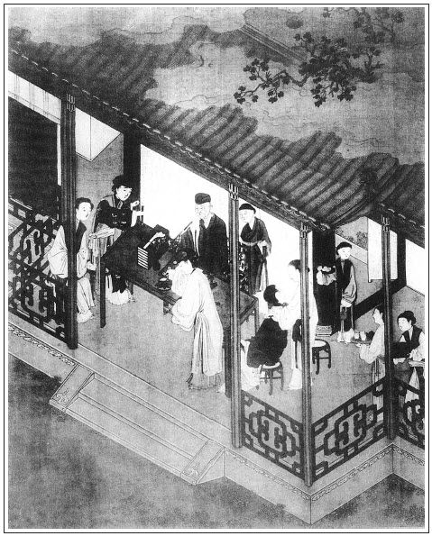

張回此回「品玉」，乃寫下回「撒潑」之由，然實起於一皮襖。夫皮襖，乃瓶兒之衣也。金蓮淘氣，終由瓶兒之衣。然則瓶兒雖死，作者猶寫已死之瓶兒，為金蓮作對也。
月娘教桂姐，郁二姐、申二姐到嬌兒房中去，後又教出來，則其羞變成怒可知。
此處寫薛姑子談經，明言孝哥，蓋一眼覷定一百回內幻化之結也。
上已寫品玉，此又寫偎玉，卻是兩樣。品玉者，驚喜梵僧之藥，先品而後試之；偎玉者，春色狼藉之至，更受不得，乃偎之，先試帶而後品也。特與梵僧藥作遙對章法，不如此不得死也。
上回品玉文中，寫金蓮品法，是一氣寫出，用幾個「或」宇，將諸品法寫完。此回卻用兩段寫，中央要皮襖一段，先用「按著粉項」，後用「一面說著」四字，兩個「又」字，一個「一回」字，臨了用「口口接著都嚥了」，便使一樣排蛙口、底琴弦、攪龜、臉偎唇裹之法，卻犯手寫來，不見一毫重複，又是一篇絕世妙文，作者心孔，吾不知幾百千竅，方能如此也。
詩曰：
富貴如朝露，交遊似聚沙。
不如竹窗裡，對卷自趺跏。
靜慮同聆偈，清神旋煮茶。
惟憂曉雞唱，塵裡事如麻。

話說西門慶摟抱潘金蓮，一覺睡到天明。婦人見他那話還直豎一條棍相似，便道：「達達，你饒了我罷，我來不得了。繡眉是假是真，說來俱可人意。待我替你咂咂罷。」張夾如此過入品玉，又與上打貓一回不同。西門慶道：「怪小淫婦兒，你若咂的過了，是你造化。」張夾恐金蓮雲，反不造化。這婦人真個蹲向他腰間，按著他一隻腿，用口替他吮弄那話。吮夠一個時分，精還不過，這西門慶用手按著粉項，往來只顧沒稜露腦搖撼，張夾寫生。那話在口裡吞吐不絕。抽拽的婦人口邊白沫橫流，殘脂在莖。張夾又是一樣品法，卻是在西門邊寫來。夫品玉文字，乃寫西門一邊，其巧滑何如？其生動為何如？又不犯打貓一字以此。婦人一面問西門慶：「二十八日應二家請俺每，去不去？」西門慶道：「怎的不去！」婦人道：「我有樁事兒央你，依不依？」繡眉以金蓮之寵，索一物，猶乘歡樂之際開口，可悲可歎。西門慶道：「怪小淫婦兒，你有甚事，說不是。」婦人道：「你把李大姐那皮襖拿出來，與我穿了罷。張夾寫出毒心。回想雪夜吳大妗子家，舉世生人當同聲一哭，然後知我有衣裳之請有有深痛也。明日吃了酒回來，他們都穿著皮襖，只奴沒件兒穿。」西門慶道：「有王招宣府當的皮襖，你穿就是了。」婦人道：「當的我不穿他，你與了李嬌兒去。把李嬌兒那皮襖卻與雪娥穿。你把李大姐那皮襖與了我，等我㩟上兩個大紅遍地金鶴袖，襯著白綾襖兒穿，也是與你做老婆一場，沒曾與了別人。」繡眉軟一句，硬一句，雖是撒嬌，然情詞婉甚。西門慶道：「賊小淫婦兒，單管愛小便宜兒。他那件皮襖值六十兩銀子哩，你穿在身上是會搖擺！」婦人道：「怪奴才，你與了張三、李四的老婆穿了？左右是你的老婆，替你裝門面，沒的有這些聲兒氣兒的。好不好我就不依了。」張夾是品玉時說的話。西門慶道：「你又求人又做硬兒。」婦人道：「怪磣貨，我是你房裡丫頭，在你跟前服軟？」一面說著，把那話放在粉臉上只顧偎晃，良久，又吞在口裡挑弄蛙口，張夾挑。一回又用舌尖抵其琴弦，張夾底。攪其龜稜，張夾攪。然後將朱唇裹著，只顧動動的。張夾攪。然後將朱唇裹著，只顧動動的。張夾此方是在金蓮邊正寫品玉，然又不與打貓一回相犯一字。夫在西門邊不犯奇矣，乃仍在金蓮邊寫，依舊不犯，作者固以此能犯為奇也。西門慶靈犀灌頂，滿腔春意透腦，良久精來，呼：「小淫婦兒，好生裹緊著，我待過也！」張夾抑知後裹不及之日乎？言未絕，其精邈了婦人一口。婦人口口接著，都嚥了。張夾比尿味又何如？正是：
自有內事迎郎意，慇勤愛把紫簫吹。
當日是安郎中擺酒，西門慶起來梳頭淨面出門。婦人還睡在被裡，便說道：「你趁閒尋尋兒出來罷。張夾寫出雪夜吳大妗子家，安心至此。等住回，你又不得閒了。」繡旁熱上趕。這西門慶於是走到李瓶兒房中，奶子、丫頭又早起來頓下茶水供養。西門慶見如意兒薄施脂粉，長畫蛾眉，笑嘻嘻遞了茶，在旁邊說話兒。西門慶一面使迎春往後邊討床房裡鑰匙去，如意兒便問：「爹討來做甚麼？」西門慶道：「我要尋皮襖與你五娘穿。」如意道：「是娘的那貂鼠皮襖？」西門慶道：「就是。他要穿穿，拿與他罷。」迎春去了，就把老婆摟在懷裡，摸他奶頭，說道：「我兒，你雖然生了孩子，奶頭兒到還恁緊。」就兩個臉對臉兒親嘴咂舌頭做一處。張夾才傷色劍，又遇花刀，安能不死。如意兒道：「我見爹常在五娘身邊，沒見爹往別的房裡去。繡旁留心之言，輸心之言。張夾一路總寫金蓮，邇日妒寵太甚為後文地也。他老人家別的罷了，只是心多容不的人。前日爹不在，為個棒槌，好不和我大嚷了一場。多虧韓嫂兒和三娘來勸開了。落後爹來家，也沒敢和爹說。不知甚麼多嘴的人對他說，說爹要了我。他也告爹來不曾？」張夾又是一番言語，一人心事。西門慶道：「他也告我來，你到明日替他陪個禮兒便了。他是恁行貨子，受不的人個甜棗兒就喜歡的。繡旁知金蓮實深。嘴頭子雖利害，到也沒什麼心。」張夾打狗蓄貓之心，彼安得知哉。如意兒道：「前日我和他嚷了，第二日爹到家，就和我說好話。說爹在他身邊偏多，『就是別的娘都讓我幾分，你凡事只有個不瞞我，我放著河水不洗船？』」張夾又與蕙蓮話一樣。西門慶道：「既是如此，大家取和些。」繡眉西門慶於家，可謂無所不淫。然月娘與金蓮合氣，雖愛金蓮，終以月娘為重；金蓮與如意合氣，如意縱不敢敵金蓮，然使之陪禮亦可免耳。而西門慶必不免，亦可謂不亂上下之分，今人不如者多。又許下老婆：「你每晚夕等我來這房裡睡。」張夾藕斷絲連。如意道：「爹真個來？休哄俺每！」張夾喜極語。西門慶道：「誰哄你來！」正說著，只見迎春取鑰匙來。西門慶教開了床房門，又開櫥櫃，拿出那皮祆來抖了抖，還用包袱包了，教迎春拿到那邊房裡去。如意兒就悄悄向西門慶說：繡旁人各有私。張夾「悄悄」二字，深寫此房為月娘據為外府久矣。「我沒件好裙襖兒，爹趁著手兒再尋件兒與了我罷。有娘小衣裳兒，再與我一件兒。」張夾又為瓶兒一哭。西門慶連忙又尋出一套翠蓋緞子襖兒、黃綿綢裙子，又是一件藍潞綢綿褲兒，又是一雙妝花膝褲腿兒，與了他。老婆磕頭謝了。西門慶鎖上門，就使他送皮襖與金蓮房裡來。金蓮才起來，在床上裹腳，只見春梅說：「如意兒送皮襖來了。」婦人便知其意，張夾賊。說道：「你教他進來。」問道：「爹使你來？」如意道：「是爹教我送來與娘穿。」金蓮道：「也與了你些什麼兒沒有？」繡旁活賊。張夾瓶兒有知，放聲一哭。如意道：「爹賞了我兩件綢絹衣裳年下穿。叫我來與娘磕頭。」於是向前磕了四個頭。繡眉如意至此，方輸心金蓮。婦人道：「姐姐每這般卻不好？你主子既愛你，常言：船多不礙港，車多不礙路，那好做惡人？你只不犯著我，我管你怎的？我這裡還多著個影兒哩！」張夾又與對蕙蓮說一樣。如意兒道：「俺娘已是沒了，雖是後邊大娘承攬，娘在前邊還是主兒，早晚望娘抬舉。小媳婦敢欺心！那裡是葉落歸根之處？」張夾又是蕙蓮對金蓮話一樣，可知為先後一氣也。婦人道：「你這衣服少不得還對你大娘說聲。」如意道：「小的前者也問大娘討來，大娘說：『等爹開時，拿兩件與你。』」婦人道：「既說知罷了。」這如意就出來，還到那邊房裡，西門慶已往前廳去了。如意便問迎春：「你頭裡取鑰匙去，大娘怎的說？」迎春說：「大娘問：『你爹要鑰匙做什麼？』我也沒說拿皮襖與五娘，只說我不知道。大娘沒言語。」繡眉雖沒要緊，亦寫得人人有心。
卻說西門慶走到廳上看設席，海鹽子弟張美、徐順、苟子孝都挑戲箱到了，李銘等四名小優兒又早來伺候，都磕頭見了。西門慶吩咐打發飯與眾人吃，吩咐李銘三個在前邊唱，左順後邊答應堂客。那日韓道國娘子王六兒沒來，打發申二姐買了兩盒禮物，坐轎子，他家進財兒跟著，也來與玉樓做生日。王經送到後邊，打發轎子出去了。不一時，門外韓大姨、孟大妗子都到了，又是傅夥計、甘夥計娘子、崔本媳婦兒段大姐並賁四娘子。張夾王六兒是尋去，葉五兒是自來，又自不同。西門慶正在廳上，看見夾道內玳安領著一個五短身子，穿綠緞襖兒、紅裙子，不搽胭粉，兩個密縫眼兒，一似鄭愛香模樣，張夾花與葉同類，故雲似愛香模樣。便問是誰。玳安道：「是賁四嫂。」西門慶就沒言語。繡眉西門慶見賁四嫂幾遍矣，姻緣該動，便覺異樣。張夾又與沉吟瓶兒一對針鋒。往後見了月娘。月娘擺茶，西門慶進來吃粥，遞與月娘鑰匙。月娘道：「你開門做什麼？」西門慶道：「潘六兒他說，明日往應二哥家吃酒沒皮襖，要李大姐那皮襖穿。」被月娘瞅了一眼，說道：「你自家把不住自家嘴頭了。他死了，嗔人分散他房裡丫頭，張夾一語將瓶兒死後，月娘要據其財物入上房，西門慶不依之情，盡情補出。蓋月娘於瓶兒之財，固朝夕虎視者也。一旦瓶兒死，豈不曰今而後天以此富貴賜我也？無如因一丫頭不肯與嬌兒，則月娘之意已大拂。今日一觸即發，中情畢露也。像你這等，就沒的話兒說了。張夾直與「分散丫頭」節頂針。他見放皮襖不穿，巴巴兒只要這皮襖穿。──早時他死了，他不死，你只好看一眼兒罷了。」繡眉曾日月幾何，而瓶兒之衣已為金蓮所有。詩曰：「子有衣裳，弗曳弗婁。宛其死矣，他人是愉。」千古傷心，似為此作。張夾瓶兒不死則瓶兒之物也，月娘利其死；瓶兒已死，月娘雖未入之於上房，然固以為藏之外府，即月娘之物矣，固金蓮之所不許。一斜視者，今日分其一物，月娘不便明爭，則又思瓶兒未死時。然則月娘說金蓮，事知其亦曾看了千百眼也。幾句說的西門慶閉口無言。忽報劉學官來還銀子，西門慶出去陪坐，在廳上說話。只見玳安拿進帖兒說：「王招宣府送禮來了。」西門慶問：「是什麼禮？」玳安道：「是賀禮：一疋尺頭、一壇南酒、四樣下飯。」西門慶即叫王經拿眷生回帖兒謝了，賞了來人五錢銀子，打發去了。
只見李桂姐門首下轎，保兒挑四盒禮物。慌的玳安替他抱氈包，說道：「桂姨，打夾道內進去罷，張夾賁四嫂才至夾道內進去，桂姐又續之，是二人同一夾道也。廳上有劉學官坐著哩。」那桂姐即向夾道內進去，來安兒把盒子挑進月娘房裡。月娘道：「爹看見不曾？」繡旁月娘亦細。玳安道：「爹陪著客，還不見哩。」月娘便說道：「且連盒放在明間內著。」一回客去了，西門慶進來吃飯，月娘道：「李桂姐送禮在這裡。」張夾是乾娘身份。西門慶道：「我不知道。」張夾冷極。月娘令小玉揭開盒兒，張夾是乾娘身份。見一盒果餡壽糕、一盒玫瑰糖糕、兩隻燒鴨、一副豕蹄。只見桂姐從房內出來，滿頭珠翠，穿著大紅對衿襖兒，藍緞裙子，望著西門慶磕了四個頭。西門慶道：「罷了，張夾冷極。又買這禮來做什麼？」張夾冷極。月娘道：「剛才桂姐對我說，怕你惱他。不干他事，說起來都是他媽的不是：張夾吃虧了他那個媽，卻又虧殺了這個娘。那日桂姐害頭疼來，只見這王三官領著一行人，往秦玉芝兒家去，打門首過，進來喫茶，張夾偏要喫茶，想桂姐開茶房乎？一笑。就被人驚散了。桂姐也沒出來見他。」西門慶道：「那一遭兒沒出來見他，張夾妙。這一遭兒又沒出來見他，張夾妙。自家也說不過。張夾妙，非復說東京人情語矣。論起來，我也難管你。這麗春院拿燒餅砌著門不成？到處銀錢兒都是一樣，我也不惱。」繡眉說只淺淺，而滿臉冷汕之色，至今如在。張夾得意語，又是醋語，又有林氏意在內。那桂姐跪在地下只顧不起來，說道：「爹惱的是。張夾所云自家說不過也。我若和他沾沾身子，就爛化了，一個毛孔兒裡生一個天皰瘡。都是俺媽，空老了一片皮，干的營生沒個主意。好的也招惹，歹的也招惹，平白叫爹惹惱。」月娘道：「你既來說開就是了，又惱怎的？」西門慶道：「你起來，我不惱你便了。」繡旁未更釋然，妙。張夾「便了」二字，是不了也。那桂姐故作嬌態，說道：「爹笑一笑兒我才起來。你不笑，我就跪一年也不起來。」張夾總是自家說不過，亦非復向日推齊香等語矣。潘金蓮在旁插口道：「桂姐你起來，只顧跪著他，求告他黃米頭兒，叫他張致！如今在這裡你便跪著他，明日到你家他卻跪著你，繡眉一往以趣話作收。──你那時卻別要理他。」繡旁非金蓮即無解釋，妙。張夾一語直透從前，又是得意話。寫金蓮此時重重得意殺，以為下文一鬧放潑地也。且西門此日亦是重重得意。如先調林氏，三官認父，後賁四嫂諸事皆是。則寫得意殺之金蓮，又對照得意殺之西門，見二人將俱敗矣。不特文字將收故縱之法，亦天道盈虛之理，宜然也。把西門慶、月娘都笑了，桂姐才起來了。只見玳安慌慌張張來報：「宋老爹、安老爹來了。」西門慶便拿衣服穿了，出去迎接。桂姐向月娘說道：「耶樂樂，從今後我也不要爹了，張夾拉白語，總反襯西門適待桂姐無好顏色也。只與娘做女兒罷。」張夾又自提出親情以乞憐。月娘道：「你的虛頭願心，張夾答其『不要爹』一句。說過道過罷了。張夾答其『做女』一句。前日兩遭往裡頭去，沒在那裡？」張夾寫出深心。桂姐道：「天麼，天麼，可是殺人！爹何曾往我家裡？繡眉慣說謊人，真處轉覺詞窮。若是到我家裡，見爹一面，沾沾身子兒，就促死了！娘你錯打聽了，敢不是我那裡，是往鄭月兒家走了兩遭，請了他家小粉頭子了。我這篇是非，就是他氣不憤架的。不然，爹如何惱我？」繡眉鄭月之搬是非，可謂密矣，而桂姐亦知之，詩云：「他人有心，予忖度之。」良不虛耳。張夾月兒自謂十分謹密，桂姐卻如親耳聽得，人世事儘是如此。作者真寫盡世事也。金蓮道：「各人衣飯，他平白怎麼架你是非？」繡旁金蓮亦作此蠢語。張夾非寫金蓮呆，正是連日得意，忘卻憤深氣苦時滋味也。桂姐道：「五娘，你不知，俺們裡邊人，一個氣不憤一個，張夾一語見血。故知不憤憶吹簫，是伏撒潑之因。然意中又為瓶兒一哭。好不生分！」月娘接過來道：「你每裡邊與外邊差甚麼？也是一般，一個不憤一個。那一個有些時道兒，就要躧下去。」繡旁妙極。月娘擺茶與他吃，不在話下。
卻說西門慶迎接宋御史、安郎中，到廳上敘禮。每人一疋緞子、一部書，奉賀西門慶。見了桌席齊整，甚是稱謝不盡。一面分賓主坐下，吃了茶，宋御史道：「學生有一事奉瀆四泉：今有巡撫侯石泉老先生，新升太常卿，學生同兩司作東，三十日敢借尊府置杯酒奉餞，初二日就起行上京去了。未審四泉允否？」張夾接續而來，簇起花樣。西門慶道：「老先生吩咐，敢不從命！但未知多少桌席？」宋御史道：「學生有分資在此。」即喚書吏取出布、按兩司連他共十二兩分資來，要一張大插桌、六張散桌，叫一起戲子。西門慶答應收了，就請去捲棚坐的。不一時，錢主事也到了。三員官會在一處下棋。宋御史見西門慶堂廡寬廣，院宇幽深，張夾蔡狀元來，亦描其房舍，此又一描，總是閒處寫生。亦見西門之交流大都為此而來。書畫文物極一時之盛。又見屏風前安著一座八仙捧壽的流金鼎，約數尺高，甚是做得奇巧。爐內焚著沉檀香，煙從龜鶴鹿口中吐出。只顧近前觀看，誇獎不已。繡眉今之效此法者頗多，讀至此不知是笑是愧。張夾寫鼎，真是為愛色貪財當頭一棒。言人壽非黃金鑄身，豈能如龜鶴長年！此日氣從口中，都近前誇獎，一旦灰寒火冷，方知無八仙捧壽也。此是作者隨處醒人春夢，又是為西門將死作引，稗官豈易做者哉！問西門慶：「這副爐鼎造得好！」因向二官說：「我學生寫書與淮安劉年兄那裡，央他替我捎帶一副來，送蔡老先，還不見到。四泉不知是那裡得來的？」西門慶道：「也是淮上一個人送學生的。」說畢下棋。西門慶吩咐下邊，看了兩個桌盒細巧菜蔬果餡點心上來，一面叫生旦在上唱南曲。宋御史道：「客尚未到，主人先吃得面紅，說不通。」安郎中道：「天寒，飲一杯無礙。」宋御史又差人去邀，差人稟道：「邀了，在磚廠黃老爹那裡下棋，便來也。」一面下棋飲酒，安郎中喚戲子：「你們唱個《宜春令》奉酒。」於是生旦合聲唱一套「第一來為壓驚」。
唱未畢，張夾妙絕。少刻見九郎，便有多少恐惶迎合，先飲一杯為壯膽地。便將小人之心之態之骨格寫盡。忽吏進報：「蔡老爹和黃老爹來了。」宋御史忙令收了桌席，各整衣冠出來迎接。蔡九知府穿素服金帶，先令人投一「侍生蔡修」拜帖與西門慶。張夾令尊的令郎，乃投侍生帖，卿真不認親者。進廳上，安郎中道：「此是主人西門大人，見在本處作千兵，也是京中老先生門下。」張夾與桂姐適才自願長遠做女話何如？那蔡知府又是作揖稱道：「久仰，久仰。」西門慶道：「容當奉拜。」敘禮畢，各寬衣服坐下。左右上了茶，各人扳話。良久，就上坐。蔡九知府居上，主位四坐。廚役割道湯飯，戲子呈遞手本，蔡九知府揀了《雙忠記》，繡眉用兩處宛合，豈淺淺文人所辦。張夾目中惟有安、宋二人。演了兩折。酒過數巡，小優兒席前唱一套《新水令》「玉鞭驕馬出皇都」。張夾直令西門等市井富貴無處生活。蔡知府笑道：「松原直得多少，可謂『御史青驄馬』，三公乃『劉郎舊縈髯』。」安郎中道：「今日更不道『江州司馬青衫濕』。」言罷，眾人都笑了。繡旁西門慶未免瞎笑。張夾特與安主事請時扳話，一對。西門慶又令春鴻唱了一套「金門獻罷平胡表」，把宋御史喜歡的要不的，因向西門慶道：「此子可愛。」張夾送鴻迎燕斷送長年，所以獨宋御史喜也。西門慶道：「此是小價，原是揚州人。」宋御史攜著他手兒，教他遞酒，賞了他三錢銀子，磕頭謝了。張夾又對書僮。正是：
窗外日光彈指過，席前花影坐間移。
一杯未盡笙歌送，階下申牌又報時。
不覺日色沉西，蔡九知府見天色晚了，即令左右穿衣告辭。眾位款留不住，俱送出大門而去。隨即差了兩名吏典，把桌席羊酒尺頭抬送到新河口去訖。張夾是清河縣。宋御史亦作辭西門慶，因說道：「今日且不謝，後日還要取擾。」張夾接連兩席，又與請黃太尉不犯。各上轎而去。
西門慶送了回來，打發戲子，吩咐：「後日還是你們來，再唱一日。叫幾個會唱的來，宋老爹請巡撫侯爺哩。」戲子道：「小的知道了。」西門慶令攢上酒桌，使玳安：「去請溫師父來坐坐。」再叫來安兒：「去請應二爹去。」不一時，次第而至，各行禮坐下。三個小優兒在旁彈唱，把酒來斟。西門慶問伯爵：「你娘們明日都去，張夾『你娘們』，三字奇絕。你叫唱的是雜耍的？」伯爵道：「哥到說得好，小人家那裡抬放？將就叫兩個唱女兒唱罷了。明日早些請眾位嫂子下降。」這裡前廳吃酒不題。
後邊，孟大姨與盂三妗子先起身去了。落後楊姑娘也要去，月娘道：「姑奶奶你再住一日兒不是，薛師父使他徒弟取了捲來，咱晚夕叫他宣卷咱們聽。」楊姑娘道：「老身實和姐姐說，要不是我也住，明日俺第二個侄兒定親事，使孩子來請我，我要瞧瞧去。」於是作辭而去。張夾一路總是散場之調，蓋柳芽復吐，杏花將嫁矣。眾人吃到掌燈以後，三位夥計娘子也都作辭去了，止留下段大姐沒去，潘姥姥也往金蓮房內去了。只有大妗子、李桂姐、申二姐和三個姑子，郁大姐和李嬌兒、孟玉樓、潘金蓮，在月娘房內坐的。忽聽前邊散了，小廝收下傢伙來。這金蓮忙抽身就往前走，到前邊悄悄立在角門首。張夾白綾帶何妨再試。只見西門慶扶著來安兒，打著燈，趔趄著腳兒就要往李瓶兒那邊走，看見金蓮在門首立著，拉了手進入房來。那來安兒便往上房交鍾箸。
月娘只說西門慶進來，把申二姐、李桂姐、郁大姐都打發往李嬌兒房內去了。張夾非此一羞，不足以動月娘之深恨，非寫月娘輕佻也。問來安道：「你爹來沒有？」來安道：「爹在五娘房裡，不耐煩了。」張夾此日之五娘房，即向日之六娘房。月娘聽了，心內就有些惱，繡旁後合氣張本。張夾此日之月娘，即向日之金蓮。因向玉樓道：「你看恁沒來頭的行貨子，我說他今日進來往你房裡去，張夾本意宣卷，因西門來家，即打發眾人那邊去者，意欲俟西門來上房。自做人情，送入玉樓房中，是月娘一生為人關目，深心柔奸大都如此。乃忽為金蓮邀去，故又向玉樓說明人情也。寫得月娘真是老奸巨滑。如何三不知又摸到他屋裡去了？這兩日又浪風發起來，只在他前邊纏。」張夾層次皆出，見後撒潑，非一朝一夕之故。玉樓道：「姐姐，隨他纏去！這等說，恰似咱每爭他的一般。可是大師父說的笑話兒，左右這六房裡，由他串到。張夾大筆如椽，將玉樓兩個生日一齊捏攏，所以說，《金瓶》中酒令、笑談不容易看也。他爹心中所欲，你我管的他！」月娘道：「乾淨他有了話！剛才聽見前頭散了，就慌的奔命往前走了。」張夾已與金蓮不解矣。因問小玉：「灶上沒人，與我把儀門拴上。後邊請三位師父來，咱每且聽他宣一回捲著。」又把李桂姐、申二姐、段大姐、郁大姐都請了來。張夾月娘面皮如何過得？月娘向大妗子道：「我頭裡旋叫他使小沙彌請了《黃氏女卷》來宣，張夾總是沒趣話。今日可可兒楊姑娘又去了。」張夾又是遮飾沒趣語。吩咐玉簫頓下好茶。玉樓對李嬌兒說：「咱兩家輪替管茶，休要只顧累大姐姐。」於是各房裡吩咐預備茶去。張夾明將玉樓生日與薛尼宣卷相連，意提明非閒筆，寫玉樓亦好佛也。蓋玉樓這一個生日是結文，恐看官不明，索性將後文孝哥幻化等因，令薛尼卷內放手一寫，以明自己章法井井，休錯看我為順手寫生日，寫念佛也。不一時，放下炕桌兒，三個姑子來到，盤膝坐在炕上。眾人俱各坐了，聽他宣卷。月娘洗手炷了香，這薛姑子展開《黃氏女卷》，高聲演說道：
蓋聞法初不滅，故歸空。道本無生，每因生而不用。由法身以垂八相，由八相以顯法身。朗朗惠燈，通開世戶；明明佛鏡，照破昏衢。百年景賴剎那間，四大幻身如泡影。每日塵勞碌碌，終朝業試忙忙。豈知一性圓明，徒逞六根貪慾。功名蓋世，無非大夢一場；富貴驚人，難免無常二字。風火散時無老少，溪山磨盡幾英雄！張夾彰明較著，大喝一番，總是西門喪命時文字之影。
演說了一回，又宣念偈子，又唱幾個勸善的佛曲兒，方才宣黃氏女怎的出身，張夾一個「怎的」。怎的看經好善，張夾二個「怎的」。又怎的死去轉世為男子，張夾三個「怎的」。又怎的男女五人一時升天。張夾四個「又怎的」，又與講打虎文字遙映，慣以此為能。與上文五祖轉世、五戒投胎，一連三段故事，皆是轉世，明點幻化。慢慢宣完，已有二更天氣。先是李嬌兒房內元宵兒拿了一道茶來，眾人吃了。張夾必帶上嬌兒所云云，遮蓋筆墨處也。
落後孟玉樓房中蘭香，又拿了幾樣精製果菜、一大壺酒來，又是一大壺茶來，與大妗子、段大姐、桂姐眾人吃。張夾細看文情，方能通身痛快。月娘又教玉簫拿出四盒兒茶食餅糖之類，與三位師父點茶。李桂姐道：「三個師父宣了這一回捲，也該我唱個曲兒孝順。」張夾三姑宣卷，一娼唱曲，彼此唱和，的是一派同調。一個要唱。月娘道：「桂姐，又起動你唱？」郁大姐道：「等我先唱。」張夾又一個要先唱。月娘道：「也罷，郁大姐先唱。」申二姐道：「等姐姐唱了，我也唱個兒與娘每聽。」張夾又一個也要唱。然則亦是三個，與宣卷者正對。桂姐不肯，道：「還是我先唱。」因問月娘要聽什麼，月娘道：「你唱個『更深靜悄』罷。」張夾隨手情景，又映前邊西門有許多不靜悄在那邊。當下桂姐送眾人酒，取過琵琶來，輕舒玉筍，款跨鮫綃，唱了一套。桂姐唱畢，郁大姐才要接琵琶，早被申二姐要過去了，繡旁伏。掛在胳膊上，先說道：張夾要「先唱的」，反被要「也唱的」奪去。「先說」寫盡人情，又寫盡申二姐是新來討好，又是王六兒邊人情可恃，所以為一罵安根。「我唱個《十二月兒掛真兒》與大妗子和娘每聽罷。」於是唱道：「正月十五鬧元宵，滿把焚香天地燒……」張夾點得有趣。真是寫生，又是映宣卷，然則亦算宣卷者。那時大妗子害夜深困的慌，也沒等的申二姐唱完，吃了茶就先往月娘房內睡去了。張夾先散一人。須臾唱完，桂姐便歸李嬌兒房內，段大姐便往孟玉樓房內，三位師父便往孫雪娥房裡，郁大姐、申二姐就與玉簫、小玉在那邊炕屋裡睡。月娘同大妗子在上房內睡，俱不在話下。張夾眾人一齊俱散，又與前說五祖時散發不同。看官聽說：古婦人懷孕，不側坐，不偃臥，不聽淫聲，不視邪色，常玩詩書金玉，故生子女端正聰慧，此胎教之法也。今月娘懷孕，不宜令僧尼宣卷，聽其死生輪迴之說。後來感得一尊古佛出世，投胎奪舍，幻化而去，不得承受家緣。蓋可惜哉！張夾明明結出。正是：
前程黑暗路途險，十二時中自著研。
文回文禹門云：此時西門慶家，自門外漢視之，莫不以為富貴皆全，繁華無比，興隆景象，熱鬧光陰，清河縣中有一無二矣。及觀與其往來者，無非戲子、姑子、婊子、小優兒、媒婆子、糊塗親戚、混帳朋友、忘八夥計。即或有顯者來，大抵借地迎賓，擺酒請客，與主人毫無干涉。儼然一個大酒店，闊飯鋪，體面窯子，眾興會館。彼且陪墊以為榮，送迎以為樂。有事則納賄求情，得財賣法，無事則妻房宣卷，妾室宣淫，細思是個什麼人家？成個什麼人物？既無事之可傳，又無功之可述，既無行之可表，又無言之可坊。乃為之詳敘生平，細言舉動，作者是何心思？批者又是何意見也？